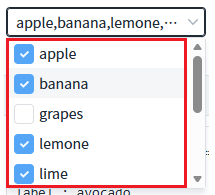
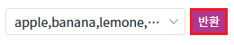
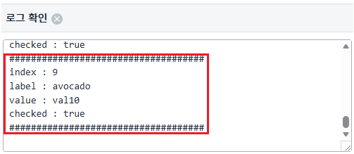

CheckCombobox의 'getInfoArray' API를 사용하여, 항목의 정보를 반환하는 예제입니다.
항목들의 정보 반환하기
예제 영역 '항목들의 정보 반환하기'에서 테스트합니다.1
STEP 1: 목록을 확장합니다.
CheckCombobox의 목록을 확장합니다.
Image 1.브라우저(Chrome) 실행 예시
2
STEP 2: 각 항목의 라벨 값, 체크 유무를 확인합니다.
Image 2.브라우저(Chrome) 실행 예시

3
STEP 3: '반환'버튼을 클릭한다.
Image 3.브라우저(Chrome) 실행 예시

4
STEP 4: 실행된 결과를 확인합니다.
STEP 2에서 확인한 항목의 값이 '로그 확인' 에 정상적으로 출력되었는지 확인한다.Image 4.브라우저(Chrome) 실행 예시

컴포넌트의 속성을 정의합니다.
[선택] separator=","
이 속성이 ","로 지정되어야 항목들을 ','로 구분한다.